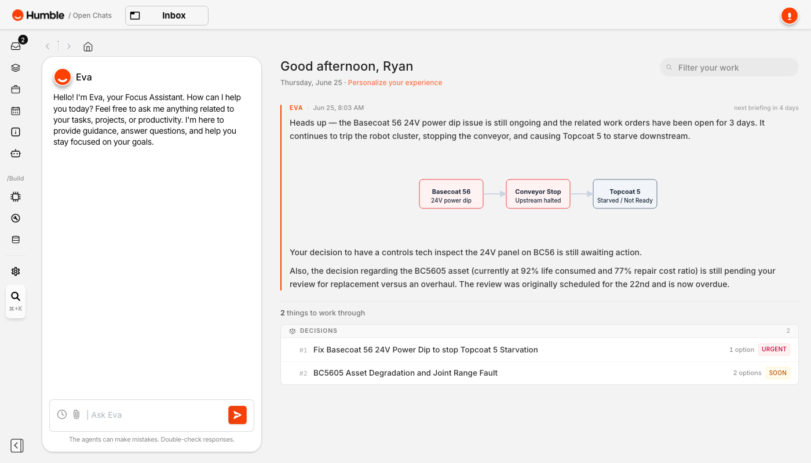
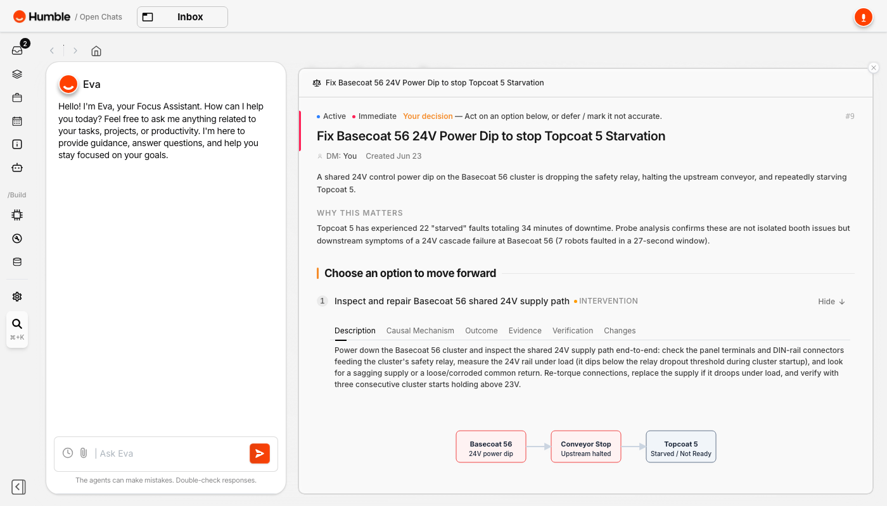
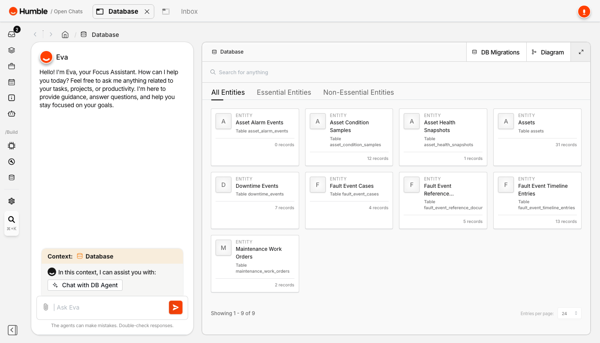
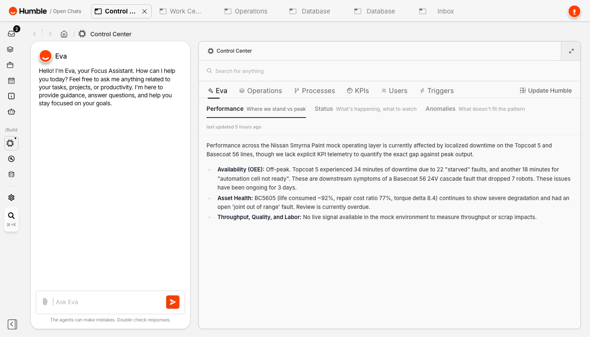
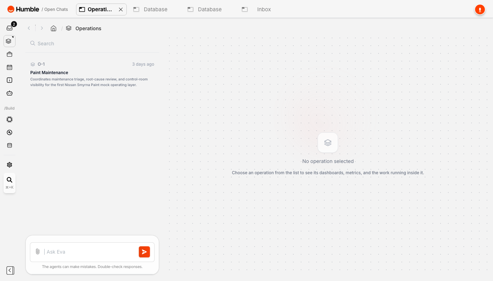
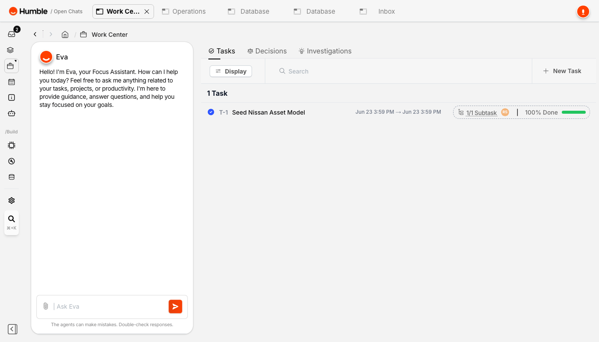
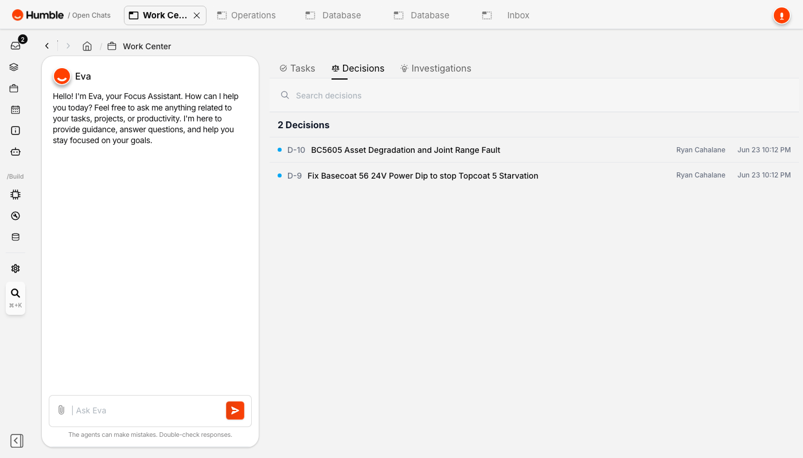
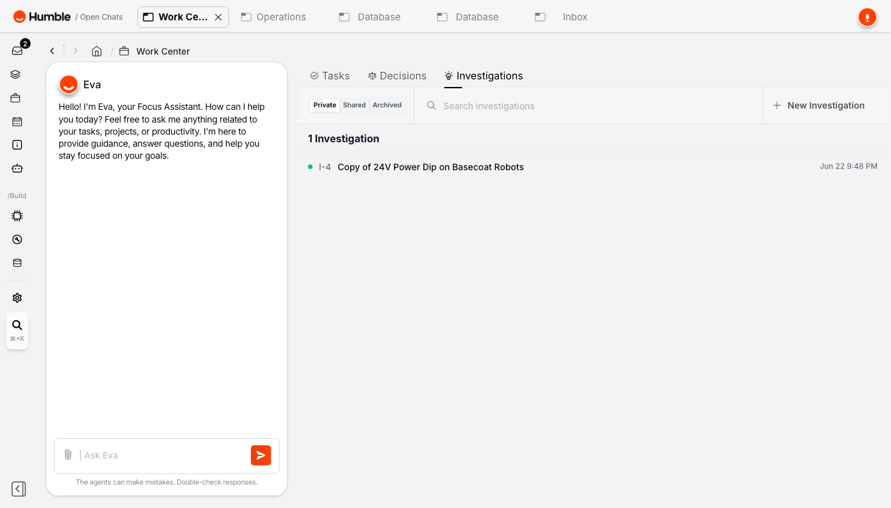

Prepared for
Nissan Smyrna senior management & maintenance leadership
Nissan Smyrna senior management & maintenance leadership
The working architecture and asset-model spec, derived from the live Nissan Smyrna exports (Cimplicity points, the Paint4 SQL schema, Senseye, the FAULT app). The Architecture tab holds the conceptual story; this tab is the implementable detail — naming convention, asset templates, and the HighByte auto-config.
Source-grounded redraw from the engineering working sessions. Customer direction: HighByte as the i3X-compliant UNS / MCP layer using its embedded broker; Humble (Factory OS) as a private-cloud VM consuming via MCP; phase 1 read-only. These supersede the conceptual As-Is / To-Be in the tabs below and continue to be refined with Nissan controls / IT.
Source-grounded working spec, derived from the real Nissan Smyrna point exports (ISS_022_POINTS, SLR_105_POINTS), the Paint4 SQL schema, the Senseye PMx asset list, and the FAULT downtime app. The goal of this section is a precise, repeatable convention that lets us generate a HighByte-importable model + instance set to auto-configure the UNS. Cell 022 (ABB sealer) is the fully worked example; cell 56 / base-coat and any Fanuc cells are stubbed pending their exports.
Every asset, point, and fault in Paint 4 already follows a consistent code. Decoding it is what lets us template once and instantiate many — and map cleanly to ISA-95.
P4 + <area> + <equipment> + <sub-component> — e.g. P4SL220101MR01 = Plant 4 · area 022 · sealer robot 01 · Mastic Regulator 01.
| Token | Meaning | Example |
|---|---|---|
P4 | Plant 4 (Paint) | P4… |
022 | Area / process cell — Sealer Automation (seam seal). Base coat = 56. | P4022MP (cell main control panel) |
SL220x | Sealer robot 1–6 in cell 022 (work unit) | P4SL2201 … P4SL2206 |
RC | Robot Controller | P4SL2201RC |
ACV | Applicator Control Valve | P4SL2201ACV |
IDFP | Integrated dispense / fluid panel | P4SL2206IDFP |
MR01 | Mastic Regulator | P4SL220101MR01 |
FP1 · MHS01 · WHS01 | Material fluid plate · material hose swivel · whip hose swivel | P4SL220201FP1 |
RP0x · MP · PDP · FIL01 | Safety interface panel · main control panel · power distribution · material filters | P4022RP02, P4022PDP |
RAMn · PUMPn | Sealer material ram assembly + pumps | P4RAM3PUMP1 |
Robot points (device ABB_ROBOT) address the controller directly: <RobotId>.<subsystem>.<…>
| Subsystem | Address pattern | Holds |
|---|---|---|
| Controller | SL2201.ControllerState | Run / stop state (DINT) |
| RAPID (program) | SL2201.RAPID.T_ROB1.pntloop.nProgramIndex | Current program / job (DINT) |
| RAPID (PdM) | SL2201.RAPID.Monitor1Tsk.TorqueData.nAxis_N_Torque_Value | Per-axis torque, 7 axes (REAL) |
| I/O signals | SL2201.IOSYSTEM.IOSIGNALS.signal | Applicator, command, safety (BOOL/WORD) |
Cimplicity PT_ID is descriptive uppercase with a function prefix (ABB_ROBOT_CURRENT_PROGRAM_INDEX_RW6); cell-master points use M0x_<SIGNAL> where M0x is the robot index (M05_CURRENT_PROGRAM). RAPID variables carry Hungarian prefixes: n numeric, do_ digital output, b bool.
Cimplicity PT_TYPE: BOOL · INT · DINT · REAL · WORD · SINT · UINT · STRING_8/20/80. Faults are PLC bit-arrays FAULT[word].bit mapped to text (FAULT[0].4 = SEALER AUTOMATION BLOCKED); downtime rolls up to categories Manufacturing · Starved · Blocked · Modified Schedule · ADC · Reorder · Lunch/Break · Between Shifts, tagged by Responsibility + Category per Area / Shift.
| ISA-95 level | Nissan code |
|---|---|
| Enterprise | Nissan |
| Site | Smyrna |
| Area | Paint 4 (P4) |
| Work center / process cell | 022 Sealer Automation |
| Work unit (equipment) | SL220x robot |
| Equipment module | RC · ACV · MR01 · FP1 · … |
Proposed UNS namespace (HighByte publish path), derived directly from the code:
Cell 022 Sealer Automation, as it exists today (from the live asset tree). Senseye PMx already carries 159 paint-shop assets across sealer, base coat, top coat, clear coat, fans and pretreat using this same code.
This tree is the ISA-95 instance hierarchy — it becomes the HighByte instance set, one per SL220x, each composed from the ABB sealer-robot model.
Derived from the 953 real ABB_ROBOT points in ISS_022 (~159 tags per robot, repeating identically across SL2201–SL2206). This is the base of the "Sealer robot — ABB" HighByte model. Robots address the ABB controller via RAPID + IOSYSTEM; aligns to the OPC UA for Robotics model (MotionDevice → Axis).
| Group | Real tag path (per robot) | Type | Feeds |
|---|---|---|---|
| Controller state | ControllerState | DINT | Availability / run-state |
| Program | RAPID.T_ROB1.pntloop.nProgramIndex | DINT | Cycle / job context |
| Axis torque (PdM) | RAPID.Monitor1Tsk.TorqueData.nAxis_N_Torque_Value + min/max {N,1|2} + user.nAxis_N_Torque_M1/M2_Mean (7 axes) | REAL | Senseye PdM (MaxTorque/axis) |
| Applicator / process | IOSIGNALS.AppEnabled / AppError, HVDisable (electrostatic), do_GrcGun1On (sealer gun), CBSMotorOn | BOOL | Process / fault |
| Command handshake | IOSIGNALS.Command / CommandToggle / CommandAck / CommandError / CommandExecuting, InParam1–3, ParamToggle | BOOL / WORD | Cycle / state |
| Cell I/O & safety | IOSIGNALS.LiftGateOpen/Req, ConveyorHoldReq, AutoMode, GhostMode, StopSignal | BOOL | Availability / safety |
Faults originate as PLC bit-arrays, are logged by Cimplicity, mirrored to SQL Server Paint4, and surfaced in the FAULT downtime app for OEE/availability. HighByte reads the mirror DB — not the plant-floor PLC.
SLR_105 carries ~6,400 alarm bits as FAULT[word].bit → description (e.g. FAULT[0].4 SEALER AUTOMATION BLOCKED, .5 STARVED). The FAULT app (npsm-intranet/Downtime/…) categorizes each by Responsibility + Category per Area / Shift.
Paint4| Object | Key columns |
|---|---|
dbo.ALARM_LOG | timestamp_utc + sequence_number (PK), alarm_id, alarm_class, resource, reference, prev_state, log_action, final_state, alarm_message, generation_time, project |
config.WorkStation | Workstation registry |
config.Zone | Zone registry |
The reference column carries the asset/point path (e.g. SL2201.…), so alarms join back to the asset model on the naming convention above — letting HighByte attach fault context to each robot instance.
End goal: a properly formatted file that imports into HighByte to auto-configure the UNS — one base model, vendor variant models, and a generated instance per asset, sourced from the Cimplicity points and the Paint4 DB.
ISS_022_POINTS)A generator (gen-highbyte-model.py) reads the Cimplicity export and emits HighByte models + one instance per robot, bound to the real point addresses. Output follows HighByte's documented model schema (name · description · groupAs · attributes[]; attribute type = Simple / Modeled / Object). Excerpt:
Full output: 2 models, 17 parent attributes, 6 instances (P4SL2201–P4SL2206), each bound to its real point addresses. Import via POST /v1/project/partial/import (merge by name).
Model + instances (JSON) Generator (Python) Import README
| File | What it is |
|---|---|
highbyte-paint4-sealer-model.json | The deliverable: 2 models (Paint4_AxisTorque child + Robot_ABB_Sealer parent) and 6 instances (P4SL2201–P4SL2206), each attribute bound to its real Cimplicity point address. This is what you import into HighByte. |
gen-highbyte-model.py | The generator that produced the JSON — reads ISS_022_POINTS and emits the models + instances. Re-run it whenever the point export changes, or point it at another cell's export. |
highbyte-import-README.md | Step-by-step import instructions, the data-type mapping, and the validation caveats below. |
Behind the same access gate as the rest of the site — the JSON and generator carry real plant point addresses, so keep them inside the access-controlled scope.
GET /v1/project/export from your hub — or one hand-built instance exported — lets us align the generator 1:1 with the real format. After that it auto-configures all six sealer robots, and the same pattern extends to cell 56 / base coat and any Fanuc cells straight from their Cimplicity exports.Moving from representative screens to a validated program. Phase 1 — real screens on the extracts Nissan provided — is done. Phase 2 is the data still needed to trust the AHI score and the KPI targets, not just render them.
| Extract (real) | Now drives |
|---|---|
FAULT.csv — 52 downtime events, Topcoat 5 | Live downtime Pareto by responsibility & cause (Cockpit) |
Robot_Fault_Detail + ABB_Robot_056 / TC_107 ALARM_LOG | Cascading-fault RCA — 24V dip → 7-robot A1HV cascade → booth starved (Cockpit) |
BC56_Torques.csv — per-axis torque, BC5601–BC5610 | AHI Pillar 1 condition · real BC5605 torque envelope (Asset Health Index) |
ReportOutput — Maximo work orders | Maintenance history (downtime min, labor hrs, RCA notes) |
ABB_Events_List (1,000) + ABB_Alarm_Groups (15) | Event dictionary / category taxonomy for Pareto grouping |
Config — ISS_022, SLR_105, Paint4 schema | HighByte asset model + naming convention |
| # | Gap | Unblocks (currently representative) | Source |
|---|---|---|---|
| 1 | Time depth — 30–90 days (not one shift) | Trending, MTBF / drift, and validating the 35/25/20/20 weights against a real population | Historian export or repeated daily DB pulls |
| 2 | Per-axis torque baselines / limits | AHI Pillar 1 — converts real torque values into a 0–100 condition score | ABB supervision limits (CustKernel) or derive from population |
| 3 | EAM runtime hours + commissioning dates | AHI Pillar 3 (lifecycle age) | EAM registry |
| 4 | Maximo $ cost + replacement value (CRV) | AHI Pillar 4 (financial) — WO export has minutes/labor but no $ or CRV | ERP / Maximo |
| 5 | Inspect / Autis defect export | Quality Pareto on the Off-paint / Punch / Sub-assembly dashboards | Inspect + Autis |
| 6 | WIP / sequence data (Jay item) | Cockpit Punch-queue + WIP-by-model view | Sequence/AVI; sensed or derived (paint-out − punch-in) |
| 7 | Clock sync / offsets across systems | Cascading-fault RCA generalizing beyond one example | NTP/PTP confirm; ms-resolution SOE |
| 8 | JPH / takt targets + "last station" trigger | Cockpit cycle-time targets (90 JPH etc.) | MES / DRS |
Screenshots from the running Humble CCR instance connected to the Nissan Smyrna paint shop data. This is what operators and maintenance supervisors see in the demo environment — and what the phase-1 build delivers.







